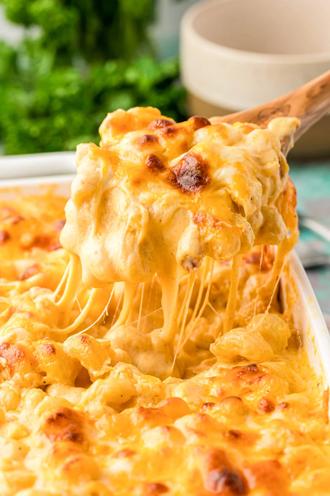
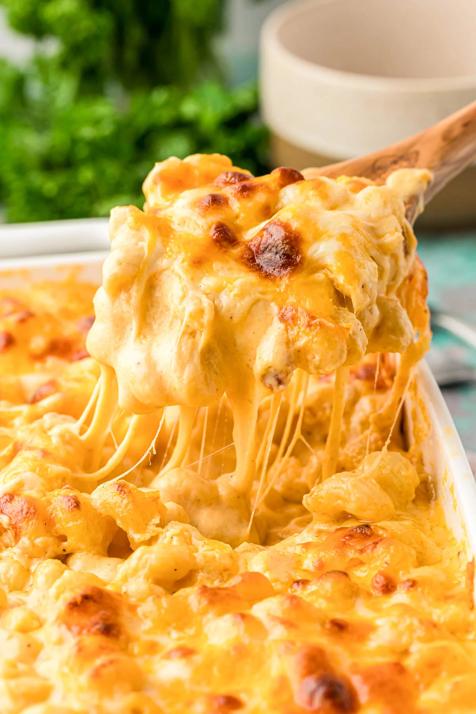

Tini’s Mac and Cheese
It might just be the Best Mac and Cheese EVER! Tini is a Social Media Chef with over 6M followers,
and this recipe is her most viral, with over 90M views (so far). Tini shared this recipe just before
Thanksgiving, and everyone went crazy for it!
It’s the quintessential comfort food – bright yellow, super saucy, and carb-loaded – basically Mac and
Cheese PERFECTION. It’s the kind of mac and cheese you make for game days, BBQs, and potlucks,
but it is simple enough to make for an easy dinner, too!
 

Baked Macaroni and Cheese Ingredients
- Cavatappi Pasta
- Mozzarella cheese
- Colby Jack cheese
- Sharp Cheddar
- Salted Butter
- All-purpose Flour
- Evaporated Milk
- Heavy Cream
- Dijon Mustard
- Fresh Parsley
- Spices:
- Garlic Powder
- Smoked Paprika
- Coarse Salt
- Ground Black Pepper
Directions
- Grate the cheese, mix it, and divide it between two bowls.
- Cook the pasta in a large pot of boiling salted water
according to directions for al dente. Timing varies depending
on the brand of pasta.
- While the pasta cooks, prepare the roux for the cheese sauce
by melting the butter with half of the seasonings. Then add the
flour and cook until bubbly.
- Pour in the evaporated milk, heavy cream, and mustard, whisking
frequently until it thickens.
- Add the cheese a handful at a time, melting each batch before
adding the next.
- Toss in the pasta until fully coated.
- Layer the pasta with the remaining shredded cheese in a baking
pan and bake.
- Broil for a couple of minutes before removing from the oven.
Let cool for about 15 minutes and digging in!
Back to Top